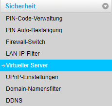

Musste meinen router reseten. Jetzt sind alle Konfigurationen die ich damals gesetzt habe weg.
Kann mich nicht mehr erinnern welchen Wert ich bei der WAN-IP ADRESSE eingegeben habe, oder wie ich den bei der Playstation herauslese.
Die beiden MAC Adressen hab ich schon probiert( die Adressen mit den Doppelpunkte), die nimmt er nicht an.
Maul schauen ob Experten hier sindgrinning
Kann mir jemand helfen
Hey @buchhaeusl
Die Lan IP Kannst du aus der Playstation unter Einstellungen -> Netzwerk -> Verbindungsstatus -> IP-Adresse auslesen. Aber es wäre besser im Router unter Einstellungen -> DHCP (sofern die neuste Firmware am Router eingespielt ist) eine statische IP für die PS4 zu vergeben.
LG NTM
PS: Es geht nicht schneller, nur weil du es an drei verschiedenen Stellen im Forum schreibst.
Sorry und die wan-ip adresse?
Wo finde ich die?
Bei Lan-IP-Filter bist du falsch, du brauchst Einstellungen -> Sicherheit -> Virtuelle Server oder Einstellungen -> Sicherheit -> Portweiterleitung.
Welches Modem hast den genau?
Huwai B310s-22
Ich glaube für die mehrfach portweiterleitungen brauch ich den Lan ip Filter, bei portweiterleitung geht auf dem router funktioniert ja die mehrfachweiterleitung nicht (z.b.10000-10099)
Ne der Lan-IP-Filter ist dafür da das weniger Pakete durchkommen, nicht mehr (was du ja willst).
Hast du schon den Business APN (Profilname "public IP", Benutzername "t-mobile", Passwort "tm", APN "business.gprsinternet") eingestellt (unter Einstellungen -> Verbindungsaufbau -> Profilverwaltung) und UPnP aktiviert (unter Einstellungen -> Sicherheit -> UPnP). Damit sollte es eigentlich schon gehen.
Bearbeitet von NTMvor 22 Minuten schrieb NTM:Ne der Lan-IP-Filter ist dafür da das weniger Pakete durchkommen, nicht mehr (was du ja willst).
Hast du schon den Business APN (Profilname "public IP", Benutzername "t-mobile", Passwort "tm", APN "business.qprsinternet") eingestellt (unter Einstellungen -> Verbindungsaufbau -> Profilverwaltung) und UPnP aktiviert (unter Einstellungen -> Sicherheit -> UPnP). Damit sollte es eigentlich schon gehen.
Apn hatte ich auch geändert
nur benutzername und profilname hatte ich anders, auch passwort war anders aber business.gprsinternet hab ich schon.
Hab ich jetzt aber nach deiner Vorlage geändert geändert, dass wird es aber nicht ausmachen, oder?
Was mach ich jetzt mit den mehrfachweiterleitungen der ports (10000-10099 usw.) ?
Bei lan ip filter hab ich die mehrfach portweiterleitung in die Liste erwünschte Teilnehmer gestellt.
Ja, das Passwort und der Nutzername des APN machen etwas aus, der Profilname ist egal.
Der Lan IP Filter ist keine Port-Weiterleitung.
Dafür muss die Funktion Virtueller Server beim B310 verwendet werden.
Letztes aller letztes Ressort ist die DMZ.
Hab auch mal dein altes Thema dazu gefunden, vielleicht fällt dir dann noch etwas ein:
Danke erst mal für die viele Hilfe.
Mit virtueller server Meinst du portweiterleitung oder.
Naja, da kann ich ja keine ports mit Bindestrich öffnen.
Und DMZ wäre derFirewall Filter Schalter?
Da hab ich hacken auf " Filter ip adresse aktivieren" gesetzt.
Wan port ping deaktivieren
Domain namenfilter aktivieren
Mac filter aktivieren
hab ich nichts gesetzt.
vor 14 Minuten schrieb buchhaeusl:Mit virtueller server Meinst du portweiterleitung oder.
Ja
vor 14 Minuten schrieb buchhaeusl:Und DMZ wäre derFirewall Filter Schalter?
Nein DMZ sollte es gesondert geben.
Machen wir es mal so, welche der Optionen fehlen bei dir?:

Okay ahm,
versuche es mal mit den folgenden Einstellungen in der Portweiterleitung:
Halt mit der Lan IP deiner PS4.
Für was genau brauchst du die Ports 10000 bis 10099?
Danke erst mal für die viele Hilfe.
Mit virtueller server Meinst du portweiterleitung oder.
Naja, da kann ich ja keine ports mit Bindestrich öffnen.
Und DMZ wäre derFirewall Filter Schalter?
Da hab ich hacken auf " Filter ip adresse aktivieren" gesetzt.
Wan port ping deaktivieren
Domain namenfilter aktivieren
Mac filter aktivieren
hab ich nichts gesetzt.
10000-10099 brauch ich für die ps4 fifa19
Ich hab mir jetzt einen fritz router 6820 gekauft, nicht zu vergleichen mit diesen huawei b310 s22.
Von der Leistung her nicht schlecht aber nicht zu vergleichen mit der fritz box.
Und die Einstellungsmöglichkeiten sind grandios.
Ports kann man gebündelt freischalten.
Bei huawei b310 s22 kannst du viel weniger selbst umstellen.
Mein Problem konnt ich aber trotzdem nicht lösen
Mittlerweile hab ich mir eine fritzbox 6820 Lte angeschafft, da man ja bei dem sämtliche ports öffnen kann, was ja beim Standard gerät von huawei nicht geht.
Hab aber in unserer Unterhaltung nicht erwähnt, dass ich telering kunde bin.
Und da trägt man bei zugangspunkt ja was anderes ein.
Könnte ich hier
Zugangspunkt:
Benutzer:
Passwort :
bekommen ?
Bei internetanbieter hab ich : Telering angegeben
Kannst du von außen über die Fritz Box zugreifen oder nicht?
Wenn nicht, dann muss das APN auf trapublic gesetzt werden
Ich kann beim router einsteigen, ganz normal.
Okay trapublic. Und der rest?
Benutzer:
Passwort:
?
vor 7 Minuten schrieb buchhaeusl:Ich kann beim router einsteigen, ganz normal.
Okay trapublic. Und der rest?
Benutzer:
Passwort:
?
Hab dir ja geantwortet:
{kind=link}
{kind=link}
{kind=link}
{kind=link}